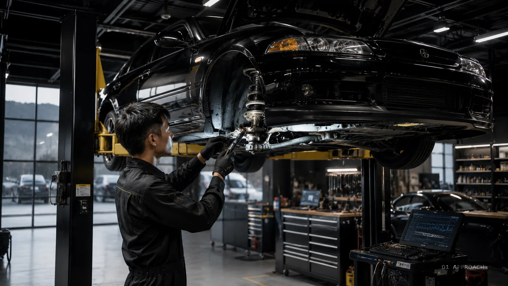
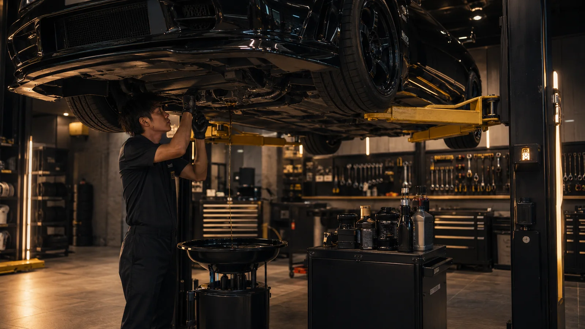
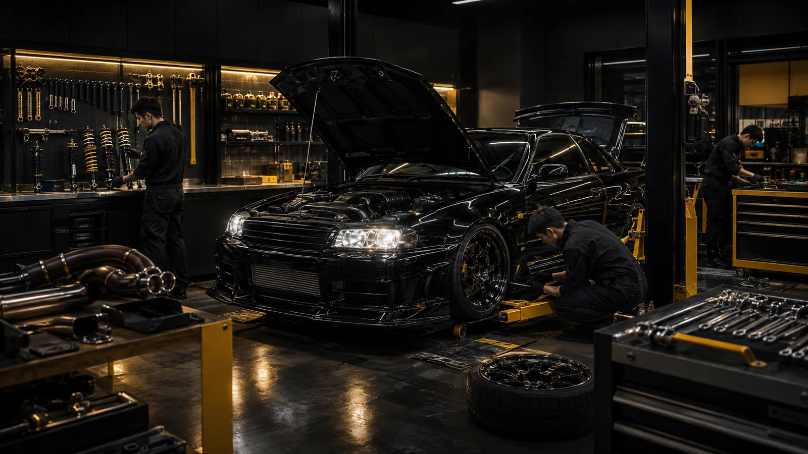

AUTO SERVICE / CUSTOM / PERFORMANCE
走りも、日常も。愛車を任せられる整備工場。
大分県杵築市。車検・一般整備・故障診断から、持込パーツ取付、カスタム、スポーツ走行向け整備まで。一台ずつ状態を確認し、必要な作業と理由を分かりやすくご案内します。
夜間・休日は緊急時応相談持込パーツ歓迎国産車・輸入車・カスタム車
DPRO LIVE INFORMATION
今日の営業情報を、リアルタイムに。
営業時間、定休日、臨時休業、お知らせ、サービス受付状況をDPROから自動取得しています。
LATEST NOTICE
お知らせを読み込んでいます。
ONLINE SERVICE
ホームページ受付メニュー
公開・受付方式・所要時間・料金目安はオーナー画面の設定と連動します。
BUSINESS CLASS WEBSITE
必要な情報へ、迷わず進める。
日常のメンテナンスを依頼したい方と、カスタム・スポーツ走行を楽しみたい方。その両方が、自分に必要な情報へすぐ進める構成に刷新しました。


掲載写真はサービスイメージです。実際の施工内容・設備・車両とは異なる場合があります。
WHY CHOOSE US
作業内容を、分かりやすく。
「何を直すのか」「なぜ必要なのか」「いつまでに必要なのか」。車両状態を確認し、優先順位とともにご説明します。ご相談とお見積もりは無料です。
- 車検・一般整備からエンジン、電装、足回りまで
- 急な不調や営業時間外の相談にも状況に応じて対応
- ネット購入品・お手持ち部品の取付相談が可能
SERVICE FLOW
相談から納車まで。
WEB受付では車両情報と希望内容を事前に登録できます。希望日時は仮受付となり、店舗からの確認連絡をもって正式確定します。
ご相談
電話・WEBから症状や希望作業をお知らせください。
車両確認
現車、型式、部品適合など必要な確認を行います。
お見積もり
作業内容、費用、優先順位をご案内します。
作業
ご了承後、内容に沿って丁寧に作業します。
ご説明・納車
実施内容と今後の注意点をお伝えします。
CONTACT & ESTIMATE
愛車のこと、まずは気軽にご相談ください。
症状がはっきりしない場合も、現在の状態を伺いながら必要な確認をご案内します。